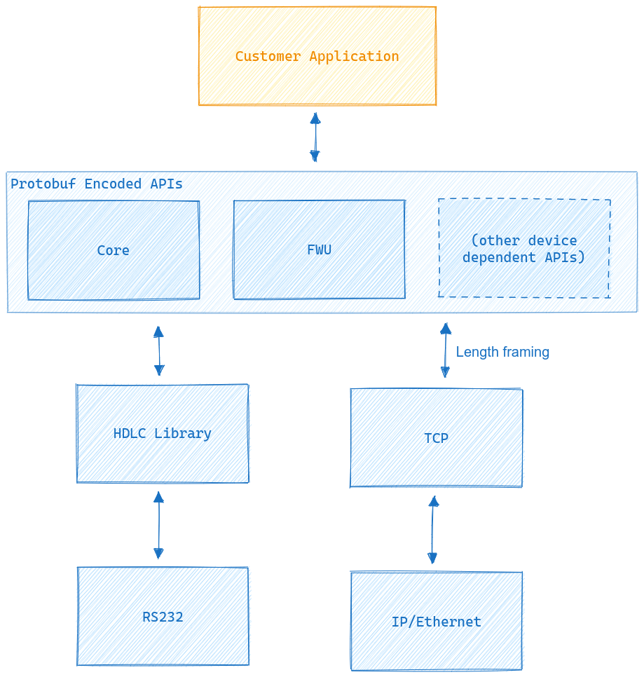

MyDefence Device Interface - MDIF
MDIF is the Interface to all MyDefence embedded devices over both serial and network.
This interface is not used with MyDefence ARGOS C2.
Overview
{kind=link}
MDIF consists of multiple layers. On top are multiple APIs for the different
types of MyDefence devices. All devices support the Core API. The APIs are
defined using Protocol Buffers. The MDIF protocol
buffer specifications can be found in src/protobuf.
Protocol buffers can be used with most OS’s and programming languages to automatically pack and unpack efficient binary representations of the API messages.
A simple Framing with length information is added to the binary protocol buffers before sending it using TCP for network links. For HDLC no additional framing is required.
APIs
General information on how the MDIF API works can be found in the General API section. Links to the individual APIs can be found in the list below.
Reference Implementations
This documentation package includes reference implementations with full source code
- Serial connection from a Linux application to a RF sensor device written in C.
Demo application in
src/linux_rfs_demoBased on HDLC Reference Library in
src/hdlc
- Serial connection from a Linux application to a RF emitter device written in C.
Demo application in
src/linux_rfe_demoBased on HDLC Reference Library in
src/hdlc
- Serial connection from an Android device written in Java/C
Demo application in
src/android_demoBased on HDLC Reference Library in
src/hdlc
- Network connection from a node.js application written in Typescript.
Demo application in
src/nodejs_demo
All implementations contain the complete stack demonstrating the use of
protocol buffers and all needed encoding. See README.md files in the source
directories for more information.
In particular the HDLC implementation should be considered the de-facto specification.